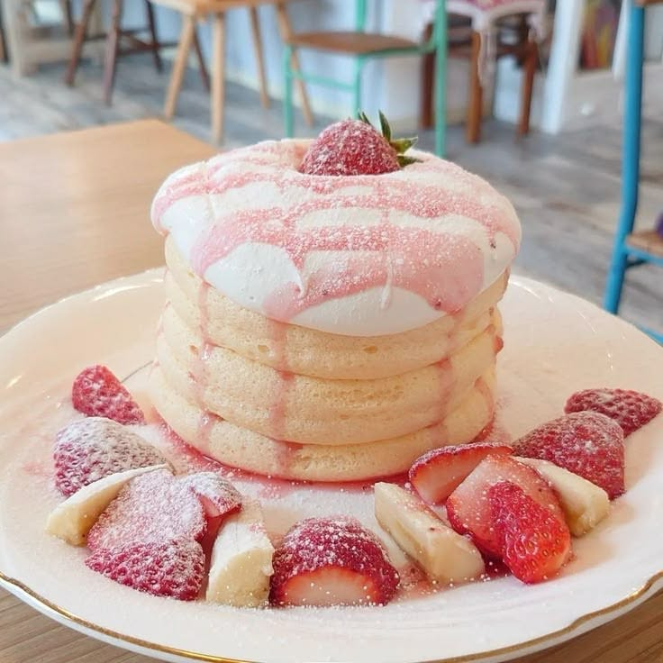
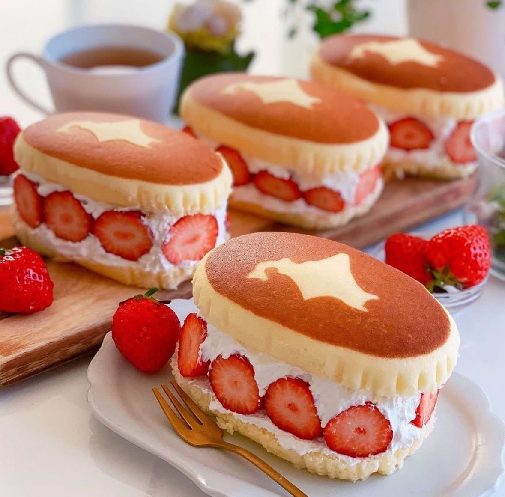
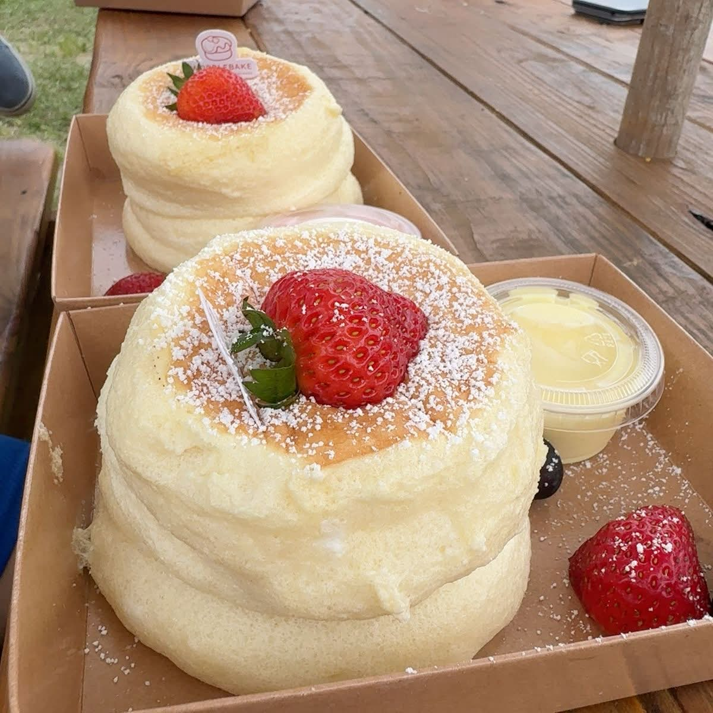

pancakes!!!
to be honest, most people would consider this to be a breafast item rather than a dessert, but when executed properly, i think it can be a delicious pancake!! i love pancakes, they're one of the greatest things humanity has ever invented. there's nothing better than the feeling of eating a fluffy pancake, with some whipped cream, chocolate syrup, and (of course), sprinkles!!!!
pancakes also come in different types, such as:
- blueberry
- chocolate chip
- bacon
- buttermilk
here are some of my favorite examples of some delicious pancakes:


